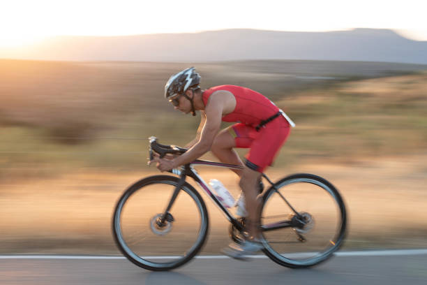

Entrada 1 · Preparación
36 semanas de entrenamiento
2 de agosto, 2025
Me basé en un plan de 36 semanas diseñado para atletas amateur, entrenando entre 10 y 18 horas semanales combinando natación, ciclismo y carrera.
Lo dividí en cuatro bloques: base aeróbica, construcción, pico de entrenamiento y tapering. Las semanas más duras llegué a 17 horas en una sola semana. Nados de 4 km, rodajes de 120 km, carreras de 30 km.
La mente resultó ser el músculo más importante de entrenar.